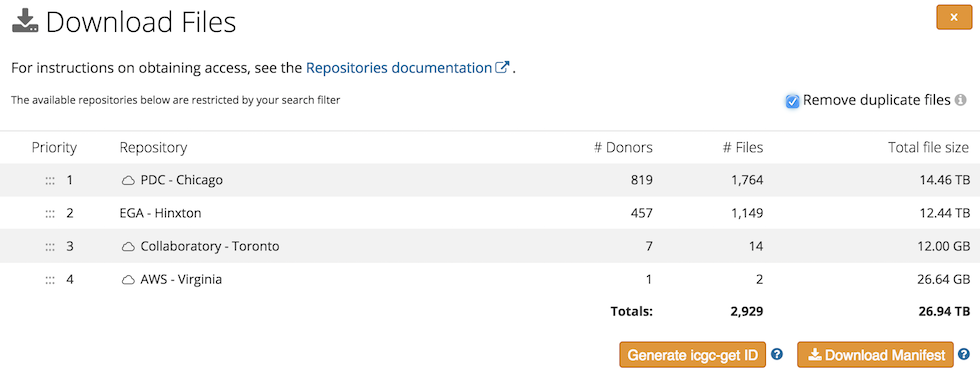
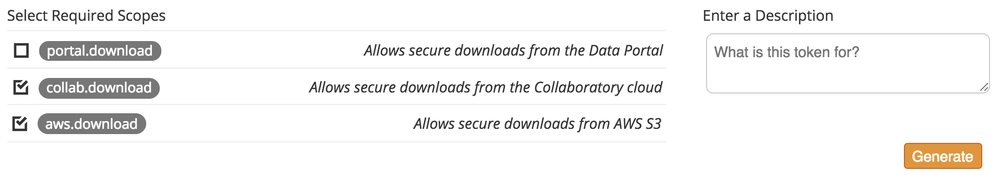

PCAWG Data Download
Data Repositories
Data produced by the PCAWG study has been deposited into multiple long-term storage systems. This table gives you an overview where data for different types can be downloaded.
| Repository | Storage type | Data types | Projects |
|---|---|---|---|
| ICGC Data Portal (Portal) | Web Accessible File | Downstream analysis results, cell line benchmarking, QC, reference genome etc | All Non-US projects |
| Cancer Genome Collaboratory (Collab) | Data Object | Aligned WGS, RNA-Seq, variant calls | All Non-US projects |
| Amazon Web Service (AWS) | Data Object | Aligned WGS, RNA-Seq, variant calls | Subset of Non-US projects |
| European Genome-phenome Archive (EGA) | Data Archive | Aligned WGS, RNA-Seq | All Non-US projects |
| Protected Data Cloud (PDC) | Data Object | Aligned WGS, RNA-Seq, variant calls, downstream analysis results | All US projects (TCGA projects) |
NOTE: Subset of Non-US projects with policy permits data to be hosted at AWS can be found from here.
Apply for Data Access
Most of the PCAWG data is controlled access that is subject to data usage agreement. Please follow instructions at ICGC DACO to apply for access to controlled data of all non-US projects. For US TCGA portion of the PCAWG data, apply for access through dbGaP.
Browse / Search for PCAWG Data
Although PCAWG results are physically stored in multiple repositories, the ICGC Data Portal provides a one-stop-shop entry point to browse / search for all PCAWG data.
Browse PCAWG Data
In the portal's Data Release section, there is a dedicated PCAWG directory where you can browse study-wide datasets (such as cell line benchmarking, QC, reference sequences) and downstream analysis results (usually associated with PCAWG publications).
The data portal presents a simple interface allowing users to navigate through the entire PCAWG data directory. Besides the data files, most of the sub-directories contain a README file that gives a summary of data content, and provides additional information about how to access related data in external systems. For example, the README in germline_variations describes how the germline callset was generated, and where ICGC portion and TCGA portion of the results can be downloaded.
Search for PCAWG data
A faceted search interface at the ICGC portal offers an easy way to interactively search for PCAWG data of your interest.
This particular query set a filter on Study = 'PCAWG', it returns all PCAWG data objects. Results are listed in a table with File ID, Donor ID, Repository etc important information. You can add more filters as needed, for examples, adding RNA-Seq in Experimental Strategy, will further narrow down the resulting data objects to PCAWG RNA-Seq. Here is the new, resulting query. If you prefer to download data from certain repositories, you can select the desired repositories as needed.
After identifying files of interest, click on the Download Files button which will bring up a dialog window displaying a summary of file counts and total size broken down by repository. As many files are distributed in multiple locations, you may want to prioritize on certain repositories. You may enable Remove duplicate files as well, it will remove files that exist in a repository that was already presented. Finally, you can click on Download Manifest which will download a tarball of manifest files, one for each chosen repository.

Manifest file format differs from one repository to the other, and thus each manifest must be used with the corresponding client tool to actually download the data. The following section will cover how to perform data download from different repositories using manifest files.
Download Data
Download from ICGC Data Portal
As mentioned earlier, data files hosted in ICGC Data Portal can be browsed in a web browser, downloading specific file of interest is a matter of a mouse click.
Open access data hosted under the PCAWG directory and its subdirectories can be downloaded without logging in. However, you must login to the Data Portal before you are able to download or even see the controlled access data files. Click on the Login button on the top right corner, and follow steps. Once successfully logged in, you should be able to see two green icons (beside your account name) like shown below on the top row of the portal. This assumes that you have already been approved by ICGC DACO for accessing controlled data.
Once logged in, you will be able to browse the PCAWG directory as usual with controlled access data files visible and downloadable.
Retrieve Access Tokens from ICGC Data Portal
When logged in you should be able to use the Token Manager (as shown above) to create access token for yourself to be used to download data from Collaboratory and AWS (see more details on how in the next section). Tokens expire in a year, you can delete a token before expiry at anytime.

Download from Collaboratory or AWS
Score Client is used to download from Collaboratory or AWS with a TSV manifest file containing necessary information about data objects to be downloaded.
The latest version of Score Client can be downloaded from here. If you are on a Linux system and already have Java 8 installed, you can have Score Client ready to use with the following commands:
wget -O score-client.tar.gz https://artifacts.oicr.on.ca/artifactory/dcc-release/bio/overture/score-client/[RELEASE]/score-client-[RELEASE]-dist.tar.gz
tar xvzf score-client.tar.gz
echo export PATH=$(pwd)/score-client-x.x.x/bin:$PATH >> ~/.bashrc
source ~/.bashrc
# you will then be able to use it by running the following command anywhere is the system
score-client
Before you can actually download controlled access data, you will need to add the
ICGC access token in the following file:
score-client-x.x.x/conf/application.properties. In the file, you should see a line like shown below. Uncomment it, add your access token, and save the file.
# accessToken=your_collab_access_token
Assuming that you downloaded a manifest file (manifest.collaboratory.1525977569066.tsv)
from ICGC data portal in the previous step, the manifest will contain files from Collaboratory.
The following command will download these files to the current directory:
score-client --profile collab download --manifest manifest.collaboratory.1525977569066.tsv --output-dir .
NOTE: when downloading PCAWG data from Collaboratory or AWS, the download client must run in the same environment as the object storage system. That means to download from Collaboratory, the Score Client must run on a virtual machine (VM) that you launched within the Collaboratory cloud platform; to download from AWS (N. Virginia), the Score Client must run on an AWS VM in the N. Virginia availability zone.
Download from EGA
After getting your ICGC DACO approval, you will need to get in touch with EGA to have your EGA account set up. You will then be able to download any EGA Datasets that are under the control of the ICGC DACO.
For EGA data download, the manifest file you download from ICGC Data Portal is actually a shell script with a few variables need to be replaced by actual values, such as, username, password, output_dir etc. The script utilizes EGA Java download client which is documented with more details here. You may modify the manifest script to suit your own need. For example, if download involves too many files it could be inefficient to request all of them at once. You may change the script so that it requests one file at a time, finish downloading and decrypting one file, then move on to the next file.
Download from PDC
PDC stores PCAWG TCGA data in Cleversafe object store, direct download access to Cleversafe buckets is provided to authorized users.
Cleversafe is compatible with AWS S3, you can use awscli client to download objects. To install awscli, please follow instructions here.
Next, you will need to get credentials from PDC. Follow the Login from NIH button on this page: https://bionimbus-pdc.opensciencedatacloud.org/datasets you will be directed to login via NIH iTrust. Upon successful login at NIH, you will be redirected back to PDC where you can now create access key. If you see TCGA-PCAWG is in the project list and you have download right, you can proceed with generating access key.
When you click on Create access key button, a popup will show the new access key id and
secret key. Copy the keys and add them to the awscli credentials file, which, depending on your system, is usually at here: ~/.aws/credentials. The file may look like below:
[pdc]
aws_access_key_id = your_pdc_access_key_id
aws_secret_access_key = your_pdc_secret_access_key
Please edit it to include your own key ID and secret key.
The manifest file that you downloaded from ICGC Data Portal for PDC is actually a shell script containing
aws cli commands, one line per file. One line may look like this:
aws --profile pdc --endpoint-url https://bionimbus-objstore-cs.opensciencedatacloud.org s3 cp s3://pcawg-tcga-brca-us/f99f7e36-8b6f-5cf0-854f-4b832d5962a4 .
You may execute the above line directly on the command line to download the object to local.